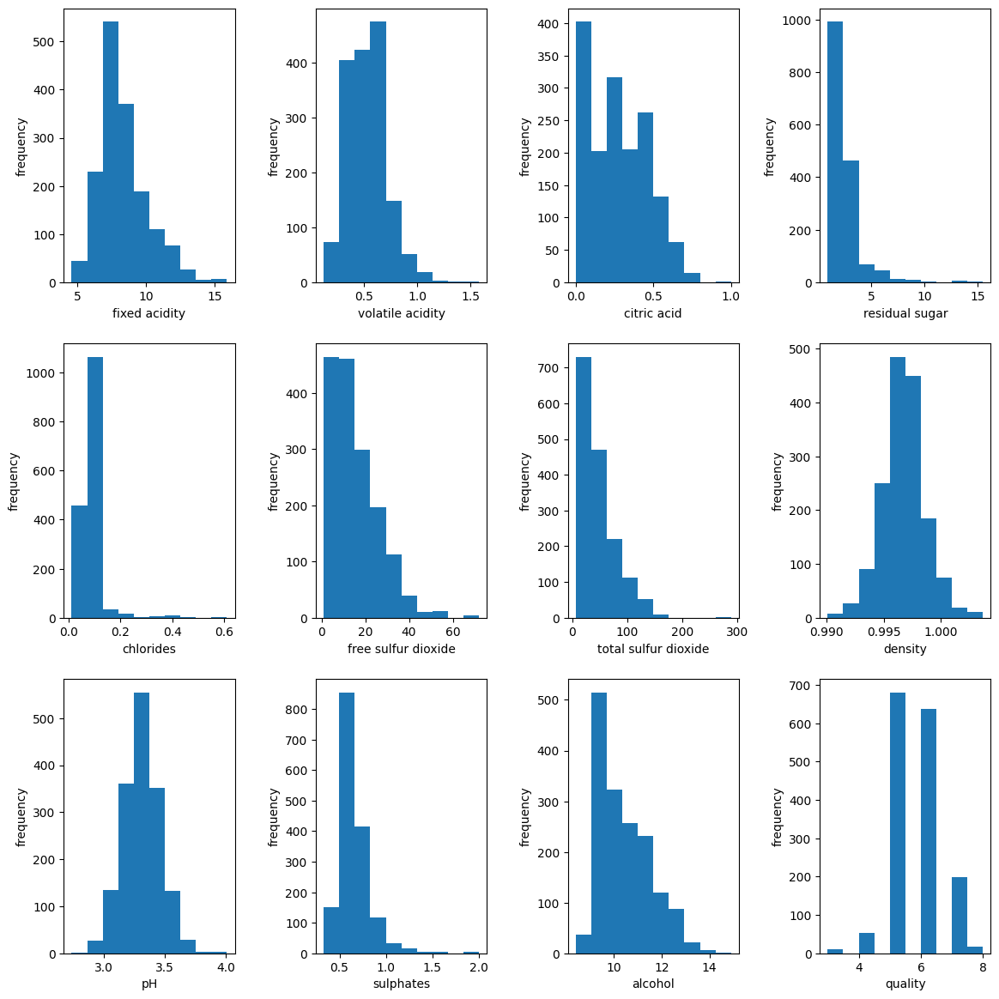

Red wine data descriptive statistics#
This notebook shows general descriptive statistics for the red wine data set. In future notebooks we will use the quality column as our target variable for classification.
Set up notebook#
import matplotlib.pyplot as plt
import numpy as np
import pandas as pd
# Read data
filename = '../data/winequality-red.csv'
data = pd.read_csv(filename)
# Show data types
data.info()
<class 'pandas.core.frame.DataFrame'>
RangeIndex: 1599 entries, 0 to 1598
Data columns (total 12 columns):
# Column Non-Null Count Dtype
--- ------ -------------- -----
0 fixed acidity 1599 non-null float64
1 volatile acidity 1599 non-null float64
2 citric acid 1599 non-null float64
3 residual sugar 1599 non-null float64
4 chlorides 1599 non-null float64
5 free sulfur dioxide 1599 non-null float64
6 total sulfur dioxide 1599 non-null float64
7 density 1599 non-null float64
8 pH 1599 non-null float64
9 sulphates 1599 non-null float64
10 alcohol 1599 non-null float64
11 quality 1599 non-null int64
dtypes: float64(11), int64(1)
memory usage: 150.0 KB
General descriptive stats#
data.head().T
| 0 | 1 | 2 | 3 | 4 | |
|---|---|---|---|---|---|
| fixed acidity | 7.4000 | 7.8000 | 7.800 | 11.200 | 7.4000 |
| volatile acidity | 0.7000 | 0.8800 | 0.760 | 0.280 | 0.7000 |
| citric acid | 0.0000 | 0.0000 | 0.040 | 0.560 | 0.0000 |
| residual sugar | 1.9000 | 2.6000 | 2.300 | 1.900 | 1.9000 |
| chlorides | 0.0760 | 0.0980 | 0.092 | 0.075 | 0.0760 |
| free sulfur dioxide | 11.0000 | 25.0000 | 15.000 | 17.000 | 11.0000 |
| total sulfur dioxide | 34.0000 | 67.0000 | 54.000 | 60.000 | 34.0000 |
| density | 0.9978 | 0.9968 | 0.997 | 0.998 | 0.9978 |
| pH | 3.5100 | 3.2000 | 3.260 | 3.160 | 3.5100 |
| sulphates | 0.5600 | 0.6800 | 0.650 | 0.580 | 0.5600 |
| alcohol | 9.4000 | 9.8000 | 9.800 | 9.800 | 9.4000 |
| quality | 5.0000 | 5.0000 | 5.000 | 6.000 | 5.0000 |
data.describe().T
| count | mean | std | min | 25% | 50% | 75% | max | |
|---|---|---|---|---|---|---|---|---|
| fixed acidity | 1599.0 | 8.319637 | 1.741096 | 4.60000 | 7.1000 | 7.90000 | 9.200000 | 15.90000 |
| volatile acidity | 1599.0 | 0.527821 | 0.179060 | 0.12000 | 0.3900 | 0.52000 | 0.640000 | 1.58000 |
| citric acid | 1599.0 | 0.270976 | 0.194801 | 0.00000 | 0.0900 | 0.26000 | 0.420000 | 1.00000 |
| residual sugar | 1599.0 | 2.538806 | 1.409928 | 0.90000 | 1.9000 | 2.20000 | 2.600000 | 15.50000 |
| chlorides | 1599.0 | 0.087467 | 0.047065 | 0.01200 | 0.0700 | 0.07900 | 0.090000 | 0.61100 |
| free sulfur dioxide | 1599.0 | 15.874922 | 10.460157 | 1.00000 | 7.0000 | 14.00000 | 21.000000 | 72.00000 |
| total sulfur dioxide | 1599.0 | 46.467792 | 32.895324 | 6.00000 | 22.0000 | 38.00000 | 62.000000 | 289.00000 |
| density | 1599.0 | 0.996747 | 0.001887 | 0.99007 | 0.9956 | 0.99675 | 0.997835 | 1.00369 |
| pH | 1599.0 | 3.311113 | 0.154386 | 2.74000 | 3.2100 | 3.31000 | 3.400000 | 4.01000 |
| sulphates | 1599.0 | 0.658149 | 0.169507 | 0.33000 | 0.5500 | 0.62000 | 0.730000 | 2.00000 |
| alcohol | 1599.0 | 10.422983 | 1.065668 | 8.40000 | 9.5000 | 10.20000 | 11.100000 | 14.90000 |
| quality | 1599.0 | 5.636023 | 0.807569 | 3.00000 | 5.0000 | 6.00000 | 6.000000 | 8.00000 |
Show histograms#
cols = list(data)
fig = plt.figure(figsize=(12, 12))
for n, col in enumerate(cols):
ax = plt.subplot(3, 4, n + 1)
ax.hist(data[col])
ax.set_xlabel(col)
ax.set_ylabel('frequency')
plt.tight_layout(pad=2)
plt.show()

Show counts of red wine by quality.
data['quality'].value_counts().sort_index()
3 10
4 53
5 681
6 638
7 199
8 18
Name: quality, dtype: int64